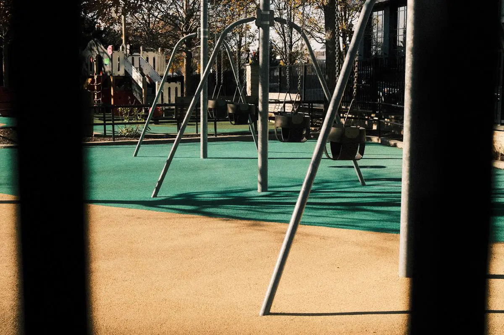

Playground instalado com documentação, não só montado
Comprar brinquedo é fácil. O que separa um playground seguro de um passivo para o síndico ou para a diretora da escola é como ele foi instalado: distância entre brinquedos, área de queda livre, piso que amortece o impacto na altura certa, fixação que não solta com a maresia e documento que prove tudo isso.
Por isso toda instalação nossa sai com laudo de entrega conforme a ABNT NBR 16071 e ART registrada no CREA-ES. Esse é o documento que a administradora, a seguradora, a prefeitura e o Ministério Público pedem — e o que protege quem responde pela área de lazer.
Atendemos Vitória, Vila Velha, Serra, Cariacica, Viana, Guarapari e região.
Como é a instalação do playground
1. Visita, medição e layout
Medimos a área, vemos o piso que existe, a drenagem, sombra, acesso e o que está em volta (piscina, garagem, muro). Com os brinquedos escolhidos — ou ajudando você a escolher — desenhamos o layout com a área de queda de cada brinquedo e as rotas de circulação. É aqui que se decide se o espaço comporta o que foi comprado.
2. Base e drenagem
Regularização do contrapiso ou execução de base nova com caimento, ralo ou dreno. Piso amortecedor sobre base que empoça descola, cria degrau e vira tropeço em poucos meses.
3. Piso de segurança
Piso emborrachado em placas ou moldado no local, ou grama sintética sobre manta amortecedora. A espessura é escolhida pela altura de queda do brinquedo mais alto, com base no ensaio do fabricante do piso.
4. Chumbamento e montagem dos brinquedos
Fundação de cada poste conforme o manual do fabricante, nível e prumo, aperto de toda a fixação, tampões nas pontas e verificação de vãos que prendem cabeça e dedo. Em região litorânea, cuidado redobrado com a proteção das bases metálicas contra corrosão.
5. Sinalização, laudo e ART
Placa com faixa etária e regras de uso, checklist de inspeção de rotina para o zelador, plano de manutenção e laudo de entrega com ART. Depois, se quiser, fazemos o laudo anual de playground.

O que entra no orçamento de instalação
| Item | O que define o custo |
|---|---|
| Quantidade e tipo de brinquedos | Número de postes a chumbar, peso das peças e tempo de montagem |
| Área de piso de segurança | Metragem e espessura — que depende da altura de queda |
| Base existente | Contrapiso aproveitável ou base nova com drenagem |
| Tipo de piso | Placa emborrachada, piso moldado no local ou grama sintética com manta |
| Acesso ao local | Cobertura, subsolo, escada ou área sem acesso de caminhão |
| Documentação | Laudo de entrega NBR 16071 e ART — incluídos no serviço |
Já comprou os brinquedos? Instalamos o que você tem, seguindo o manual do fabricante. Ainda vai comprar? Ajudamos a especificar o conjunto que cabe na área e na faixa etária — antes da compra, que é quando o erro sai mais barato.
Onde instalamos playground
| Local | Cuidado específico |
|---|---|
| Condomínio residencial | Distância de piscina e garagem, aprovação em assembleia, laudo para a administradora |
| Escola e creche | Faixas etárias separadas, piso acessível, documento para vigilância sanitária e fiscalização |
| Clube, hotel e buffet infantil | Uso intenso: fixação reforçada e plano de inspeção mais frequente |
| Área pública e praça | Antivandalismo, drenagem e manutenção previsível |
| Cobertura e terraço | Carga na laje, impermeabilização preservada e fixação sem furar a manta |

Erros de instalação que mais encontramos
- Brinquedo alto sobre piso intertravado, concreto ou grama sintética sem manta.
- Banco, mureta ou canteiro dentro da área de queda do escorregador ou do balanço.
- Poste chumbado raso ou sem concreto, que balança depois da primeira chuva forte.
- Brinquedos muito próximos, com áreas de queda sobrepostas.
- Parafuso sem tampão e ponta exposta na altura do rosto da criança.
- Nenhum documento de entrega — e ninguém sabe dizer quem instalou.
Perguntas frequentes sobre instalação de playground
Quanto custa instalar um playground?
Depende da quantidade de brinquedos, da metragem e da espessura do piso de segurança (que segue a altura de queda), do estado da base e do acesso ao local. Mande fotos da área, as medidas e a lista dos brinquedos pelo WhatsApp: retornamos com escopo, prazo e valor, já com laudo de entrega e ART incluídos.
Vocês instalam brinquedo que eu já comprei?
Sim. Instalamos o conjunto que você comprou seguindo o manual do fabricante e conferimos se a área comporta as áreas de queda exigidas. Se não comportar, avisamos antes de começar e propomos o ajuste de layout.
A instalação sai com ART e laudo?
Sim. Toda instalação é entregue com laudo de entrega conforme a ABNT NBR 16071 e ART registrada no CREA-ES, além de checklist de inspeção de rotina e plano de manutenção para o condomínio ou a escola.
Qual piso colocar embaixo do playground?
Piso amortecedor de impacto com espessura compatível com a altura de queda: piso emborrachado em placas ou moldado no local, ou grama sintética assentada sobre manta amortecedora. Concreto, intertravado e grama sintética sem manta não são piso de segurança.
Quanto tempo leva a instalação?
Um playground de condomínio com piso emborrachado costuma ficar pronto em poucos dias de obra, mais o tempo de cura do concreto das fundações e da base quando ela precisa ser refeita. O cronograma exato sai na visita técnica.
Atendem fora de Vitória?
Sim: Vila Velha, Serra, Cariacica, Viana, Guarapari, Fundão e, sob consulta, Anchieta, Aracruz e Linhares.
Instalação de playground na Grande Vitória
Playground completo, com piso de segurança, laudo e ART, em condomínios, escolas e clubes:
Vai aprovar o playground em assembleia?
Mande fotos e medidas da área. Retornamos com layout, prazo e valor para levar à votação.